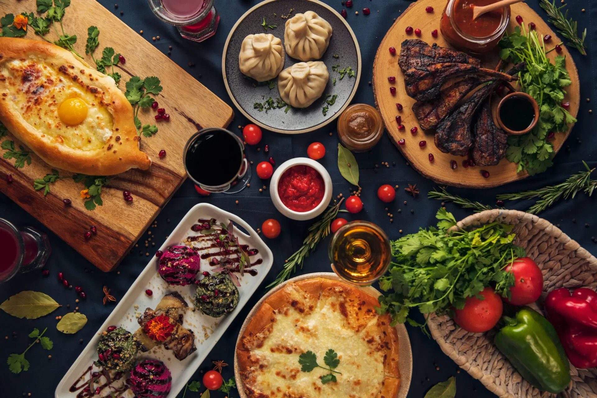

იმერეთი — საქართველო ბუნების გულში
იმერეთი არის დასავლეთ საქართველოში მდებარე ისტორიული და ადმინისტრაციული რეგიონი, რომელიც თავისი ბუნებრივი სილამაზით, მდიდარი კულტურითა და ტრადიციებით გამოირჩევა.
ბუნება და გეოგრაფია
იმერეთი განთქმულია ვაკეებით, ულამაზესი მთებით და მდინარეებით, რაც მას ერთ-ერთ ულამაზეს რეგიონად აქცევს საქართველოში. აქ შეხვდებით:
- ბაღდათის მთებს
- რიონისა და წყალტუბოს ხეობებს
- უხვად ტყეებსა და მინდვრებს
კულტურა და ტრადიციები
იმერეთში ძლიერია ხალხური ხელობა, მუსიკა და ქართული სტუმართმოყვარეობა. აქ არსებობს მრავალი ფესტივალი და სახალხო დღესასწაულები, რომლებიც საუკუნეების ტრადიციებს ინარჩუნებენ.
იმერეთის ტრადიციული საკვები
იმერეთის სამზარეულო გამოირჩევა მდიდარი და მრავალფეროვანი გემოთი, რომელსაც დღემდე ინარჩუნებს ხალხური რეცეპტები და მეთოდები.
- ხინკალი — გემრიელი ხორციანი პელმენი, რომელიც ხშირად მზადდება ნატურალური ინგრედიენტებით.
- კარტოფილის ბლინი — ტრადიციული სადღესასწაულო ფაფუკი ფაფა.
- იმერული პური — თბილი, სურნელოვანი პური, რომელიც იშვიათად მთავრდება ტრადიციული სადილების გარეშე.
- ყაბაყის ჩახოხბილი — ლეღვისფერი წვნიანი, რომელიც მზადდება ყაბაყით და მწვანილებით.
- ხაჭაპური — მჭადი, რომელიც ხშირად მზადდება სხვადასხვა სახის ხილით ან ბოსტნეულით.

იმერეთის სილამაზე